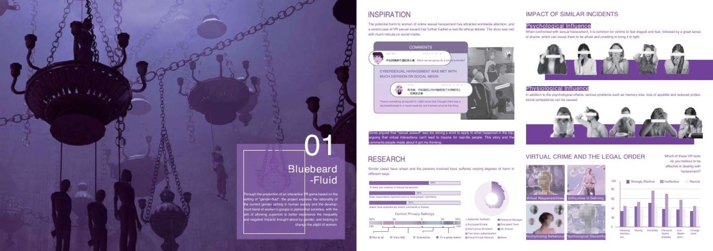
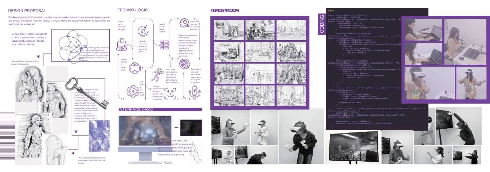

Bluebeard–Fluid
An immersive narrative that uses a fictional virtual world to examine gender, power, and personal boundaries.
See the world and development boards
Frame the experience through a story
The project draws on debates about harm in virtual spaces and uses a speculative narrative to explore whose experiences are recognized.
Build a world for the question
The original boards show the research, scene production, and narrative sequence. The virtual world is designed to prompt reflection about how social roles shape an encounter.
Project documentation

